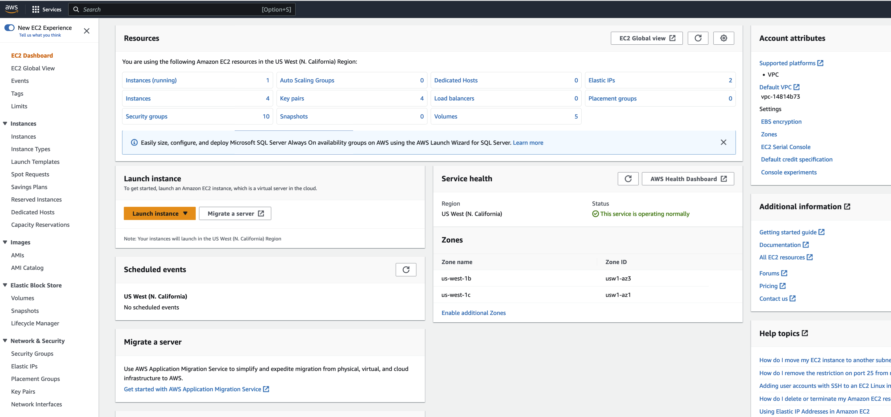

Set up a virtual server on AWS EC2 Console (in anticipation of hosting Shiny apps)
![]()
 Photo by Nathan Waters on Unsplash
Photo by Nathan Waters on Unsplash
1 Introduction
Ok! I’ve got my Shiny app running just the way I want it. Works great! Now, how do I get it up on the web and shared with my collaborators?
Assuming we have a working shiny app, named for example power1_app, we next need to address the task of how to host the app on the web. To answer this challenge we’ll break the problem into two parts:
- Create and launch a virtual server. and
- Configure the server to provide secure access to our Shiny app.
Below we recommend a solution we’ve found to be effective and straightforward. We’ll describe how to ‘spin up’ a server on Amazon Web Services using the EC2 (Elastic Compute Cloud) console. In a separate post here we’ll show how, through the application of Docker, R, Shiny, and Caddy (webserver) functionality we can have a fully functional and secure app available on the web with minimal effort.
2 Hosting
No matter what method we use to host a shiny app online we’ll need to complete the following pre- and post-launch sets of tasks one way or another:
Pre-launch tasks:
- obtain a static IP address, e.g.
111.222.333.444 - obtain a domain name, e.g.
rgtlab.org. - define a security model, aka a firewall, for the server
- create a public and private RSA keypair.
- configure a virtual server. Configuration entails selecting the operating system, the number of CPUs, the amount of memory, and the operating system.
- generate the virtual server, along with a keypair and security group.
- associate the domain name with the static IP address.
- associate the IP with the server
Post-launch tasks:
- install and configure a webserver
- obtain and install an SSL certificate (to allow encrypted Web communication)
- setup an authentication method (password protection for app access)
- configure a reverse proxy i.e. a method to translate https (port 443) requests to Shiny (port 3838).
At first glance these requirements may appear daunting, but on closer inspection each can be met with relative ease through the use of the right tools.
Technically, if the goal is simply to get the app up on the Web and security is not an issue, its not required to have a static IP, or a domain name, or even a reverse proxy. but if these elements of the process are skipped the server will only be able to communicate via the unencrypted HTTP protocol and the site URL will be something like 111.222.333.444:3838/power1_shiny, and anyone with the URL will be able to reach the site. Also the IP address will change every time the server is rebooted.
2.1 Select a hosting service
There are a number of cloud based server hosting options to choose from: for example Microsoft Azure, Oracle, Google Cloud, Amazon AWS EC2, Digital Ocean or Hetzner to name a few. Each has their own approach to setting up a custom virtual server. Several have free or low-cost service tiers available.
In this post we’ll provide a step-by-step description of a process using Amazon Web Services Elastic Compute Cloud (AWS EC2) infrastructure.
AWS is, in our view, a reasonable choice for setting up a small custom server. Its not the cheapest option, but the system is well documented and, in our experience, reliable.
The first step is to get set up with AWS. To start, open the EC2 console by visiting the URL:
https://aws.amazon.com/console(see margin figure)
In the console window choose regional service. For us its “N. California”.

Next create an account, or sign in. Once you’re logged in navigate to the EC2 dashboard. Its through this dashboard (aka console) that we’ll define the parameters for the type of server to launch and the mechanisms for communicating with it. We’ll refer to these as “Pre-Launch” tasks.
3 AWS Working Environment
3.1 Overview
Along with selecting a server we need to set up a working environment. We recommend setting up the working environment before launching the server, as it saves some back and forth with the console, but doing so is not required. The working environment consists of four main components:
A security credential (RSA key-pair) to allow remote and secure login to the virtual server once its launched.
A firewall, or security model, which restricts incoming server access. The purpose of the firewall is to close ofe all incoming packet traffic except through those ports specifically named.
A static IP address, say 111.222.333.444. A static IP is required for maintaining the link between the domain name and the server when rebooting. (The default is for the instance/server to be assigned a new IP address each time its rebooted).
A domain name, say
rgtlab.org. A domain name is not required but will facilitate collaborator access by not requiring the use of the IP address directly.
These working environment components are not directly tied to any specific server. In fact, you can define multiple instances of each component. The only requirement is that you pick one of each to associate with each server.
3.2 Work Environment Details.
3.2.1 Ssh key pair
In order to securely communicate with the server we need to exchange an RSA key pair with AWS. The pair consists of a private key and a public key. We can define a key pair in one of two ways in EC2. Either, generate the pair locally, on our workstation and upload the public key to EC2, or have EC2 generate the key pair and download the private key. The EC2 based generation process will place the public key in the ~/.ssh/authorized_keys file on the server.
For the first option (local generation) we create a directory on our workstation to hold the keys and navigate to it, e.g. ~/.ssh. In the ~/.ssh directory generate the keys with the command
> ssh-keygen -m PEMPEM defines the key format. More information on public key authentication can be found (here). Also detailed instructions are available on AWS (here)
In the interactive dialog that follows name the key prefix something like power1_app.pem. The dialog will ask for a passphrase. You can enter a phrase for an additional level of security, but its not required. The ssh-keygen program will generate two files: power1_app.pem and power1_app.pem.pub
To complete the process return to the EC2 dashboard and select Network & Security/Keypair/Actions and then Import key pair in the left panel. Enter the name power1_app and select the Browse button. Navigate to the ~/.ssh/power1_app.pem.pub file and and select the Import key pair button at the bottom of the page.
For the second approach (EC2 generated) select Create key pair button in the upper right of the console page. A form will appears and ask for a name. Enter something like power1_app. Select RSA for key pair type and .pem for key file format. The keys will be created and the private key power1_app.pem will be offered for download to the local machine. We suggest placing it in the ~/.ssh directory. Lastly, change the permissions for the private key, so only you can access with the following command:
> sudo chmod 400 power1_app.pem3.2.2 Firewall
To create a firewall, click on Security groups under Network & Security settings in the left hand panel. Choose Create security group, and name the security group something like power1_app.
Under Inbound Rules select SSH and HTTPS from the Type dropdown menu. Select Anywhere IPv4 0.0.0.0/0 for both (??).
This will create a firewall that leaves open only ports 22 and 443, for ssh and https incoming traffic, respectively.
3.2.3 Static IP address
You can use the EC2 elastic IP service to get a static IP. Navigate to Network and Security again and select Allocate Elastic IP. An IP will be assigned from the EC2 pool of available IPv4 IP addresses e.g. 13.57.139.31.
3.2.4 Domain Name
To obtain a dedicated domain name, leave the EC2 dashboard and go to Amazon route 53 dashboard to select a domain name and associate it with our static IP (select Service at the top of the dashboard and search for Route 53).
Once a domain name is acquired, e.g. rgtlab.org, you can associate it with any IP address, static or dynamic. This can be done via the Route 53 service. For example, to associate domain name rgtlab.org with the elastic IP 111.2222.333.444 do the following in Route 53:
- click on
hosted zonesin the side panel - click on
rgtlab.orgin center panel - click on checkbox for
rgtlab.orgtype=A line - then click on edit record in right panel
- change IP address to the assigned static 111.222.333.444 in “value”.

4 Select and launch instance
From
Instancesin the EC2 dashboard, clickLaunch InstancesName the server, saypower1_appand select an operating system for the server. We recommend theUbuntuOS. Ubuntu is a mature Linux distribution based on Debain Linux. Click theUbuntubutton. (see margin figure)Next choose an instance type, e.g.
t2-micro. Different instance types are combinations of number and architecture of processors, memory, storage capacity, and network performance. Thet2-microtype, for example, has 1 cpu and 1 GiB of memory.choose a Key pair e.g. select
power1_appthe drop down list.Select a Security Group, e.g. use
power1_appfrom your environment.choose a storage amount. e.g. enter 30 GB of
EBS General Purpose SSD GP2. Thirty GBs is the maximum allowed in the ‘Free tier’ of servers on AWS. In our experience smaller disk sizes can lead to problems.Under
advanced optionsscroll to the bottom and browse to ??? if you have setup code you want to run one time after server generation. see an example in attendix 2 below.click Launch Instance to launch the server.
After the instance launches open the Elastic IP dialog under Network Security and the Actions button and associate the IP address with the new instance.
4.1 Access server
On your laptop log into server with
ssh -i "~/.ssh/power1_app" ubuntu@rgtlab.org5 Appendix 1: Tip 1
For convenience, construct a config file in ~/.ssh as:
Host rgtlab.org #domain name
HostName 13.57.139.31 # static IP
User ubuntu # default user on ubuntu server
Port 22 # the default port ssh uses
IdentityFile ~/.ssh/power1_app.pem # private keythen we can ssh into the new server with the appreviated command
sh> ssh rgtlab.org6 Appendix 2: aws_startup_code.sh
#!/bin/bash
apt update
# Add Docker and Docker Compose support to the Ubuntu's packages list
apt-get install curl -y
apt-get install gnupg -y
apt-get install ca-certificates -y
apt-get install lsb-release -y
sudo install -m 0755 -d /etc/apt/keyrings
curl -fsSL https://download.docker.com/linux/ubuntu/gpg | \
sudo gpg --dearmor -o /etc/apt/keyrings/docker.gpg
sudo chmod a+r /etc/apt/keyrings/docker.gpg
echo "deb [arch="$(dpkg --print-architecture)" \
signed-by=/etc/apt/keyrings/docker.gpg] https://download.docker.com/linux/ubuntu \
"$(. /etc/os-release && echo "$VERSION_CODENAME")" stable" | \
sudo tee /etc/apt/sources.list.d/docker.list > /dev/null
apt-get update
apt-get install docker-ce docker-ce-cli containerd.io docker-compose-plugin -y
su ubuntu -
usermod -aG docker ubuntu6.1 Prerequisites
In development
6.2 Step-by-Step Implementation
In development
6.3 Key Takeaways
In development
6.4 Further Reading
In development
Reuse
Citation
@online{(ryy)_glenn_thomas2025,
author = {(Ryy) Glenn Thomas, Ronald},
title = {{Set} up a Virtual Server on {AWS} {EC2} {Console} (in
Anticipation of Hosting {Shiny} Apps)},
date = {2025-05-13},
url = {https://focusonr.org/posts/server_setup_aws_console/},
langid = {en}
}